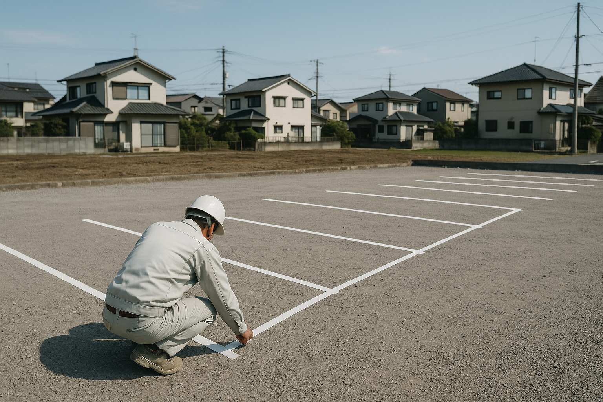

← コラム一覧に戻る

解体後の更地は、駐車場やトランクルームとして活用する選択肢もあります
「解体はしたけれど、跡地をどうするか決まっていない」――更地になった土地の使い道に迷う空き家オーナー様は少なくありません。建物を建てるほどの資金は出したくないが、固定資産税の負担だけは続くという状況で選択肢になるのが、駐車場やトランクルームとしての活用です。
どちらも初期費用を抑えて始めやすく、需要のある立地であれば安定した収入源になります。この記事では、それぞれの特徴と始める前に確認すべきポイントを解説します。
駐車場経営には2つのタイプがある
駐車場経営には、地域住民向けに区画を貸し出す月極駐車場と、時間単位で料金を徴収するコインパーキングがあります。前者は収益が安定しやすい反面、空き区画が出ると埋まるまで時間がかかることがあります。後者は鹿児島市中心部など人の出入りが多い立地で高い収益が見込める一方、初期投資（機器設置費用）がかかります。
| 方式 | 初期費用の目安 | 向いている立地 |
|---|---|---|
| 月極駐車場 | 数万円〜（砂利敷き・白線程度） | 住宅街、駅・オフィスから離れた立地 |
| コインパーキング | 数十万円〜（精算機等の設置） | 鹿児島市中心部など人通り・車の出入りが多い立地 |
| トランクルーム | コンテナ設置費用が中心 | 住宅街、郊外の幹線道路沿いなど |
トランクルーム経営の特徴
トランクルームは、コンテナや簡易の物置ユニットを設置し、荷物の収納スペースとして貸し出す事業です。近隣に住宅が多いエリアで一定の需要があり、管理の手間も駐車場より少なく済む場合があります。ただし、鹿児島は台風の通り道でもあるため、コンテナの固定方法や排水対策には注意が必要です。
始める前に確認しておきたいこと
📌 駐車場・トランクルーム活用の事前チェック
- 都市計画法上の用途地域や、接道条件に問題がないか
- 周辺に競合する駐車場・トランクルームがどの程度あるか
- 鹿児島市・霧島市・姶良市など、立地によって想定される利用者層が異なることを踏まえた需要調査
- 運営を自主管理にするか、管理会社へ委託するか
「更地にすれば何かに使えるはず」と需要調査をせずに設備投資をしてしまうと、区画が埋まらず収益化できないケースもあります。着手前に周辺の駐車場相場や空き状況を確認しておくことが重要です。
他の活用方法と比較して判断する
駐車場・トランクルームは初期費用を抑えられる分、賃貸住宅として貸し出す場合ほどの高い収益は見込みにくいのが実情です。土地の広さ・立地・将来的に売却する可能性の有無によって、どの活用方法が向いているかは変わってきます。
TAMARIEでは、更地となった土地について、駐車場・トランクルーム活用のご提案から、売却との収益比較まで含めてご相談いただけます。「跡地の使い道が決まらない」という段階からお気軽にご連絡ください。